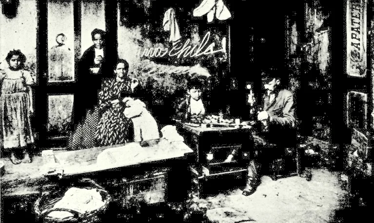
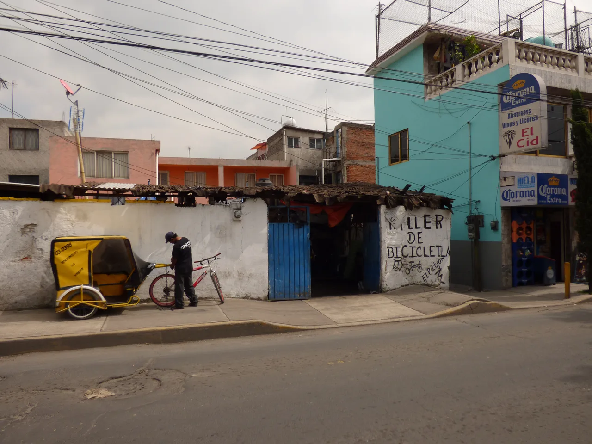

Antes de que el mercado decretara que las cosas nacen para ser arrojadas a la basura, las manos populares inventaron una sabiduría del alambre, el parche y la costura paciente. Una indagación sobre el remiendo, la reparación cotidiana y la memoria afectiva de la materia en América Latina.
El capitalismo contemporáneo ha fundado su imperio sobre una mentira piadosa que repetimos a diario sin sospechar su veneno: la ilusión de que el mundo es inagotable y que las cosas que usamos nacen huérfanas de pasado y están destinadas a morir sin duelo en un basurero. Nos han educado para el descarte; nos han convencido de que un electrodoméstico que chisporrotea, un zapato con la suela despegada o una silla de madera con una pata floja son ofensas intolerables a nuestra dignidad de consumidores modernos, manchas de fealdad que deben ser reemplazadas de inmediato por una pieza nueva, reluciente y precintada en plástico burbuja. En los manuales de economía corporativa llaman a esto obsolescencia programada y dinamización del mercado; en el idioma severo de la vida humana deberíamos llamarlo simplemente desacato a la materia y desprecio por las horas de trabajo ajeno.

Frente a ese régimen del desperdicio que devora los recursos del planeta y llena los mares de sedimentos sintéticos, se levanta en cada esquina de América Latina una resistencia callada, modesta y pertinaz que no aparece en los tratados de filosofía ni en las cumbres internacionales del clima: la sabiduría del remiendo. Caminemos despacio por las calles de cualquier barrio popular —da igual si es en Santiago de Chile, en Medellín, en La Paz, en Puebla o en los suburbios de Montevideo— y afinemos la mirada hacia los zaguanes abiertos, hacia los quioscos de lámina galvanizada y hacia los pequeños talleres de banqueta donde hombres y mujeres de manos encallecidas pasan la jornada entera devolviéndole la vida a lo que los ricos dieron por muerto.
Allí está, en primer lugar, el zapatero remendón, una figura que los cronistas de principios del siglo veinte ya retrataban con ternura y que sigue viva contra todo pronóstico tecnológico. Sentado en un banco bajo de madera pulida por el roce de los pantalones, el zapatero sostiene entre los muslos una horma de hierro de tres brazos, ese yunque doméstico con forma de pie invertido sobre el que se martilla el cuero viejo. Sobre su delantal de lona grasienta descansan las herramientas del oficio: la lezna de punta curva para perforar la vaqueta gruesa sin desgarrarla, la chaveta afilada sobre una piedra de asentar humedecida en saliva, las tenazas de bocado ancho y la bola de pez de castilla con que se encera el hilo de cáñamo para que corra suavemente por la costura y selle la humedad del invierno.
El zapatero no inventa un zapato nuevo: dialoga con el zapato que alguien ha caminado durante años. Observa el desgaste asimétrico del tacón, la hendidura que el juanete del cliente ha grabado en el costado de la capellada, la rotura donde el empeine se dobló diez mil veces al subir las escaleras del cerro. Cada arruga del cuero es una confesión íntima de la vida de su dueño. Cuando el zapatero corta un parche de caucho extraído de una vieja cubierta de camión, lo lija con esmero para abrir los poros, unta el pegamento de contacto de olor penetrante y espera con paciencia campesina el momento exacto en que la cola deja de brillar para asestar el golpe seco del martillo, no está realizando un simple servicio comercial: está sellando un pacto de lealtad entre el caminante y su camino.
No podemos olvidar la memoria de las ollas familiares, esos calderos pesados de aluminio fundido o peltre donde se cocina el sancocho, el mole o la cazuela comunitaria durante décadas. Cuando una olla vieja se perfora por la acción continuada del fuego y la acidez del tomate, nadie en una casa campesina piensa en tirarla a la basura. Hasta hace poco recorría los caminos rurales el componedor de ollas, un hombre con un morral de cuero que llevaba pequeñas láminas de estaño, remaches de cobre y un berbiquí manual. Perforaba con pulso firme el borde del orificio carcomido, colocaba dos arandelas metálicas selladas con una pizca de masilla resistente al fuego y asestaba un par de martillazos certeros para remachar la pieza. La olla quedaba marcada con una pequeña verruga plateada en el fondo, un lunar de metal que los niños de la casa aprendían a reconocer al raspar el pegado con la cuchara de palo. Esa marca no era un defecto: era la prueba física de que la comida de la familia tenía historia.
Unos metros más adelante, en una esquina azotada por el viento, encontramos el puesto del vulcanizador de bicicletas y llantas de carretilla. Su taller cabe entero en una caja de madera y una tina de agua turbia: una lija gastada, un tubo de solución autovulcanizante y una tira de cámara de aire inservible de la que va recortando pequeños óvalos con unas tijeras melladas. El procedimiento tiene la belleza incontestable de las ceremonias exactas: sumergir la tripa inflada en la palangana, seguir con el oído y la vista la hilera menuda de burbujas que delata la fuga invisible, marcar el pinchazo con una tiza blanca, raspar la superficie hasta que el caucho pierda su brillo sintético, aplicar el pegamento y prensar el parche entre dos maderas con una prensa de carpintero durante cinco minutos. El parche queda soldado a nivel molecular; la llanta vuelve a rodar; el muchacho que reparte pan o periódicos puede seguir pedaleando para ganarse el pan del día.
Ocurre algo semejante con la máquina de coser doméstica, casi siempre una pesada Singer de hierro fundido esmaltada en negro con filigranas doradas, que viajó en mula o en canoa hace sesenta años para instalarse en el rincón más luminoso de la sala. Esas máquinas eran indestructibles porque fueron concebidas para un mundo donde las cosas debían durar más que sus propietarios. Cuando la correa de cuero de transmisión se rompía por la resequedad, no se compraba un motor eléctrico moderno: el padre de familia cortaba una tira de vaqueta de una cincha vieja, le abría dos orificios con un clavo caliente y unía los extremos con una grapa de alambre doblada a mano. Se aplicaban tres gotas de aceite mineral en los orificios señalados en el chasis, se limpiaban las pelusas acumuladas en el cangrejo con un cepillo de dientes gastado, y el pedal de hierro volvía a mecerse con ese compás rítmico y tranquilizador que arrullaba las siestas de varias generaciones.
Conviene reflexionar sobre la naturaleza física de los materiales con los que el remiendo popular opera en nuestras tierras, porque en esa selección empírica se manifiesta una poética material deslumbrante. El rey indiscutido de esta tecnología de supervivencia es el alambre recocido, llamado alambre dulce o alambre negro según la región. A diferencia del acero templado de las fábricas, rígido y quebradizo ante la torsión continua, el alambre dulce es dócil, se deja doblar con los dedos, soporta ser retorcido una docena de veces con un alicate común y no pierde su fuerza de agarre. Con dos brazas de alambre un campesino repara el mango quebrado de una pala, asegura el tubo de escape de una camioneta que amenaza con caerse en medio de una trocha de barro, remienda la malla de un corral de gallinas o une los largueros de una cama de madera para que no cruja en la noche.
Junto al alambre convive la tripa de llanta, esa goma elástica y tenaz que se obtiene descuartizando las cámaras de aire de los camiones de carga. Cortada en tiras largas de dos dedos de ancho, la tripa de llanta se convierte en una ligadura indestructible que aprieta con una tensión que ningún perno moderno puede igualar; resiste la intemperie, la lluvia torrencial y el sol abrasador sin perder su elasticidad. Y cuando hace falta aislar, unir o disimular una rotura en un cable eléctrico o en el mango de una herramienta de impacto, aparece la humilde cinta de aislar negra, ese rollo de vinilo pegajoso que en los hogares populares de América Latina sustituye a las soldaduras costosas y a las piezas de recambio oficiales con una eficacia indiscutible.

En las carreteras sinuosas de la cordillera o en las pistas de tierra del Chaco, la sabiduría del remiendo alcanza ribetes de epopeya mecánica. Quien haya viajado en un autobús intermunicipal desvencijado o en una camioneta de carga mixta sabrá que el chofer y su ayudante son consumados maestros del bricolaje extremo. Ante una rotura imprevista en medio de la nada, donde no hay señal de telefonía ni auxilio mecánico a cien kilómetros a la redonda, estos hombres despliegan una inventiva casi chamánica: usan una media de nailon de mujer para sustituir una correa de alternador rota; frotan una barra de jabón de lavar ropa sobre una fisura en el tanque de gasolina para que la grasa selle la fuga momentáneamente; o vierten una cucharada de pimentón molido en el radiador hirviente para taponar los poros de una fuga de refrigerante. No se trata de chapuzas irresponsables: es la respuesta lúcida y desesperada del cuerpo que se niega a quedar varado en la inmensidad hostil de la geografía.
En los últimos años se ha puesto de moda en ciertos círculos ilustrados de Europa y Estados Unidos el culto al kintsugi, esa antigua técnica japonesa de reparar vasijas de cerámica rota uniendo los fragmentos con resina de laca mezclada con polvo de oro o plata. Los libros de autoayuda y los blogs de diseño contemporáneo han convertido el kintsugi en una metáfora chic de la resiliencia psicológica, celebrando cómo la herida embellecida por el oro hace al objeto más valioso que cuando estaba intacto. Pero no nos engañemos: el kintsugi de los coleccionistas es el lujo estético de una sociedad refinada y aristocrática que puede permitirse pagar gramos de oro molido para decorar una taza de té ornamental.
El remiendo latinoamericano, por el contrario, no busca la complacencia estética ni pretende que su cicatriz sea admirada como una obra de arte conceptual. El parche de cuero en el codo de una chaqueta de lana, la grapa de alambre que une las dos mitades de un barreño de peltre agujereado o el trozo de manguera de jardín que sustituye el mango roto de una cafetera no están allí para presumir de su herida: están allí porque la vida apremia, porque el dinero falta y porque la familia necesita seguir cocinando, abrigándose y trabajando al amanecer. Y sin embargo, o precisamente por eso, hay en esa herida sin retórica una nobleza moral infinitamente superior a la del oro oriental: la nobleza de lo que se niega a rendirse ante la muerte de la utilidad.
Hay en esta devoción por la reparación un desafío frontal al fetiche de la innovación que los apóstoles del capitalismo digital predican desde los auditorios climatizados de California. Toda la retórica de Silicon Valley gira en torno a la destrucción creativa, al mandato histérico de innovar o morir, a la necesidad de inventar cada seis meses una aplicación o un artefacto que vuelva obsoleto todo lo anterior. Pero los antropólogos que han estudiado la vida material de los pueblos saben que la civilización humana no se sostiene sobre la innovación espasmódica, sino sobre el mantenimiento silencioso. Cuidar lo que ya existe, barrer la vereda, pintar la fachada descascarada, ajustar el tornillo que vibra y poner un parche sobre la tela gastada son los actos que impiden que el mundo se desmorone en el caos y el abandono.
Hay también en el remiendo una lección epistemológica urgente para el diseño industrial y la arquitectura de nuestro tiempo. La cultura del proyecto hegemónica, educada en el sueño prometeico del plano inmaculado y el producto estandarizado, diseña cosas cerradas sobre sí mismas, herméticas, blindadas con tornillos de cabeza especial que impiden ser abiertas por el usuario común y circuitos integrados pensados para autodestruirse al cabo de veinticuatro meses. Es un diseño hostil a la convivencia humana, un diseño que nos trata como imbéciles dependientes del servicio técnico autorizado y nos arrebata la soberanía sobre los artefactos que nos rodean.
El pensamiento del remiendo, en cambio, propone una relación abierta con la materia. Para reparar un objeto es necesario comprenderlo por dentro: hay que desmontarlo con cuidado, examinar sus engranajes, entender la dirección de sus fuerzas, descubrir por qué falló y encontrar una solución que dialogue con sus debilidades intrínsecas. El remendón es, en el sentido más noble de la palabra, un fenomenólogo de la materia: sabe qué maderas se pudren con la humedad y cuáles se endurecen bajo el agua; sabe cómo dilata el metal con el calor del mediodía y cuánta tensión soporta una puntada en diagonal sobre un tejido viejo.
Conviene no olvidar, por último, la dimensión política y comunitaria de esta práctica. En las barriadas y en las veredas campesinas de América Latina nadie repara en soledad absoluta. La herramienta que falta se pide prestada al compadre de la casa vecina; el trozo de tubo que sobró de una construcción se guarda debajo del lavadero porque se sabe con certeza que el hermano o el cuñado lo necesitará la próxima semana; el conocimiento técnico no se patenta ni se vende bajo licencias comerciales, sino que se transmite de palabra en la vereda mientras se toma un café o un mate caliente. El remiendo teje una red invisible de favores, préstamos y cuidados que constituye el verdadero cemento de la vida social popular.
En este tiempo desquiciado donde los líderes mundiales firman tratados abstractos sobre la sostenibilidad mientras los barcos cargueros transportan millones de toneladas de chatarra electrónica hacia las playas de África y Asia, convendría volver los ojos con humildad hacia estos talleres de remiendo que resisten en nuestros barrios. En el silencio laborioso del zapatero que ajusta un tacón gastado, en la paciencia del campesino que une dos cables con un trozo de alambre recocido y en la aguja menuda de la madre que zurce el uniforme escolar de su hijo para que dure un año más, late una sabiduría profunda que el mundo moderno ha olvidado: la certeza de que el verdadero respeto por la vida humana empieza por el cuidado amoroso, lúcido y obstinado de las cosas que sostienen nuestro paso sobre la tierra.
Fuentes.
- Sennett, Richard (2008). El artesano: El trabajo manual, el conocimiento tácito y el compromiso material. Anagrama.
- Lévi-Strauss, Claude (1962). El pensamiento salvaje: La ciencia de lo concreto y el bricolaje. Fondo de Cultura Económica.
- Illich, Iván (1973). La convivencialidad: Herramientas para la autonomía frente a los monopolios radicales. Barral Editores.
Investigación sobre cultura material, tecnologías populares de reparación y economía del cuidado en América Latina.
Fuentes consultadas el 19.11.2026. Análisis e interpretación: RUMMOR. Edición privada para revisión.